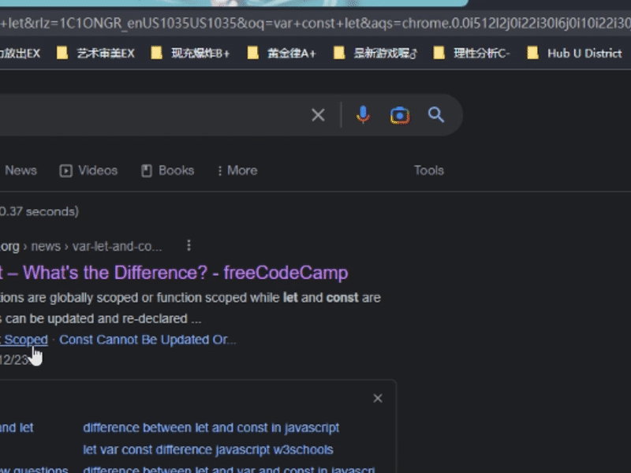
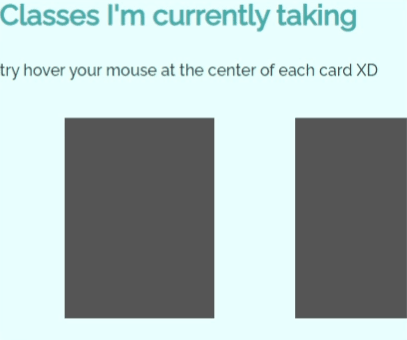

The mp1 Writeup
Last updated: 2023/1/24
Sorry that I was just a bit overwhelmed by workload and spring festival events, I will make sure have everything here by Monday. Thank you
Overview
-
STPE 1: Firstly I have to setup my environment in order to program. Considering the content of this project, I created a new repository on github named as `Little C Shock`, the name of my extension, and clone to local directory.
-
STPE 2: Following the examples provided in class, I created the basic folders and files for the program, which are `manifest.json`, `popup\popup.html`, `popup\popup.css`, `popup\popup.js`, `content-script\conten.js`, and folders for my `images` and `media`.
-
STPE 3: I copied the template for `manifest.json` and modified the the objects accordingly, including "manifest_version", "name", "description", "version", "action", "permissions", and "content_scripts". These will be constantly adjusted as I go with the project. I set the "default_popup" to be "popup/popup.html" and created an icon in the base directory, which is set to "default_icon" so chrome could recognize it.
-
STPE 4: I go to the "chrome://extensions/" in my chrome browser, load my extension so I can constanly test out the performance later during the process. Once I changed something in my code, I can simply clicked the refresh button.
-
STPE 5: Then I wrote the popup.html and popup.css. I have a checkbox in my popup window so that the user could switch on and off the functionality.

-
STPE 6: I created files for both html and css for about me, cheatsheet, and MP0 Writeup pages in the proper directory. Then I copied the coding from my index.html to them because I wanted to keep the basic layout, such as header, footer, and navigation bar. I then deleted the content under <body> to replace contents I want to have on these pages.
-
STPE 7: I changed the links that connect to each page accordingly since the directory is different. I also put all the pictures I wanted to use in a folder called img for easy management and reference.
-
STPE 8: Lastly, I wrote the writeup, browsing between each page to make sure there is no bugs or typos.
Issue
One issue I encountered was that as I am creating multiple subpages from my index.html, I wanted to apply the css styling from the main page to other pages for universal look and consistent aesthetics. However, I could not find a way to inherit or import the stylesheet like what we usually do with java and python. Simply copy and paste everything is redundent and nonoptimal for futur debugging and maintainence. Eventually, after many searching, I find out that I can link mutliple stylesheets in one html file, and the more specific styling can just overwrite the original.
CSS Transition
The CSS Transition I utilized in this project is the class cards on the home page. The expected behavior is when you hover the mouse at the card, the actual course I am taking this quarter will slowly appear. This is actually the first time I hear and use the Transition feature of css. I chose this behavior is because I simply want to make some sort of card drawing and flipping animation as I am a huge fan of card tricks and card games. I achieve this functionabiltiy by using setting `transition: opacity 0.5s ease-in-out;` for the text within each card and opacity as 0 as the initial state. In this way, the transition will change the opacity of the text in 0.5s as ease-in-out. However, in order to initiate this action, I need to set the text p:hover with css property opacity:1. So that when a cursor hover on the text, the opacity should change to 1, which displays. However, the cursor has to position on the text in order to make the behavior happen, where the text was originally unseen. Thus, I modified the box of the p element to make top, right, bottom, left all as zero so they cover the entire card container. The following is a gif of how the transition works.
Ideas and Future
- · An organized gallery for showcasing all my projects and artworks.
- · A more aesthetically pleasing website that features the best color-color choice, nice fonts and sizes, as well as high quality images.
- · Some animation as the user navigate through the website, or right at the point when they encounter the website.
- · A little web game that is attached the the main page.